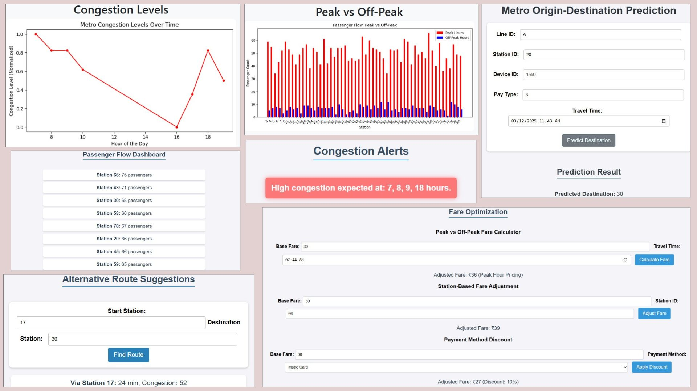

🚀 Key Features
- Predicts origin-destination (OD) flows using fare and trip time data
- Multinomial Logit model for destination probability calculation
- Handles large datasets from Automatic Fare Collection (AFC) systems
- Peak vs off-peak time analysis to identify high-load stations
- Interactive OD matrix generation
- Heatmap and cluster visualizations of passenger flow
📈 Modules Used
- Pandas, NumPy: Data preprocessing and manipulation
- Matplotlib, Seaborn: Graphical representation of OD matrices
- Scikit-learn: Model evaluation, scaling, and clustering
💡 Insights & Use Case
MetroFlow helps city authorities and transport planners identify crowded stations, predict future demand, and plan expansions. With dynamic time-based insights, it supports optimizing train frequency and improving infrastructure.

🌐 Tech Stack
- Python 3.x
- Flask for web integration
- Machine Learning: Multinomial Logit Model
- Data Visualization: Matplotlib, Seaborn